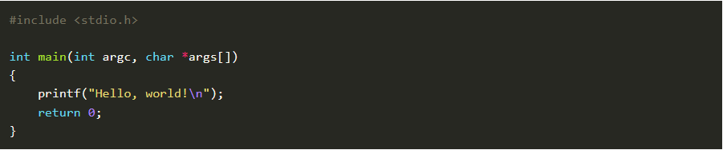
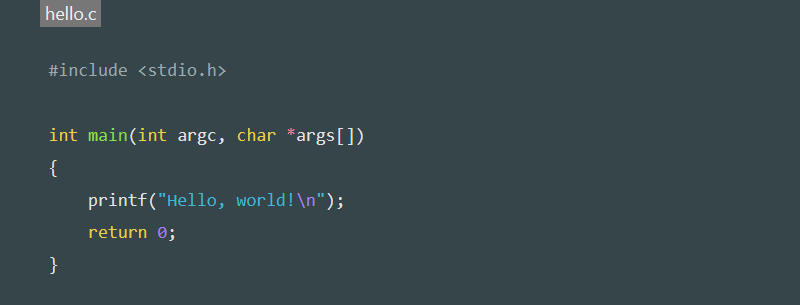

<code class="">會跑到哪兒…
 躲很深…
躲很深…最近想把學習過程中碰到的小問題做些筆記，剛好又對static site generator有些興趣， 就到https://www.staticgen.com/找個人氣度高的來用，之後就選上了這個Hugo， 雖然這個Beautiful Hugo的theme挺好看的，之後還是要改一下，首先還是先搞定code block…
預設的code black原本的是這樣
#include <stdio.h>
int main(int argc, char *args[])
{
printf("Hello, world!\n");
return 0;
}
Hugo有使用Chroma Highlighting，只要在```後加上語言名稱即可
範例：
```c
#include
int main(int argc, char *args[])
{
printf("Hello, world!\n");
return 0;
}
```
顯示：

不過個人偏好像Qiita那樣能顯示title， 如下圖：  所以剛好參考了這篇https://aakira.app/blog/2018/12/code-block-title/ 就開始動手了，但個人要的是有Line Number的版本：
首先弄一個
|
|
然後來找看看<code class="">會跑到哪兒…
躲很深…
知道大概位置就可以可以寫個js了
|
|
感覺抓element的方式非常差勁，大概會是史上最醜的code之一…
然後稍微用css修飾一下
.highlight td:first-child pre {
border-top-left-radius: unset;
border-top-right-radius: unset;
border-bottom-left-radius: 4px;
border-bottom-right-radius: unset;
overflow: hidden;
}
.highlight td:last-child pre {
border-top-left-radius: unset;
border-top-right-radius: unset;
border-bottom-left-radius: unset;
border-bottom-right-radius: 4px;
overflow: hidden;
}
css也寫得不高明…
完成！
|
|
syntax也可以用副檔名判斷，意外地貼心！ 現階段還是臨時成軍，之後再修正吧…大概